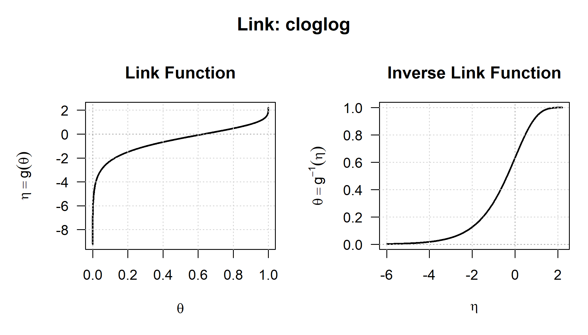

lk <- logit_link()
lk
#> S7 Link Object: logit
#> - Parameter domain (theta): (0, 1)
c(lk@link_name, lk@link_bounds)
#> [1] "logit" "0" "1"2 The linkfunctions7 package
The parameters of a distribution are usually constrained: a scale is positive, a probability lies between zero and one, a correlation between minus one and one. An optimiser, on the other hand, works best with an argument it can move freely in any direction. A link function connects the two: it maps the constrained domain of a parameter onto an unconstrained scale, and its inverse maps the optimiser’s iterates back into the domain where the distribution is defined. This chapter gives the precise definition, derives the relationship between the derivatives of a link and those of its inverse, explains why the toolkit carries both to fourth order, and ends with the catalogue of the sixteen link classes that linkfunctions7 provides.
2.1 Definition
Definition 2.1 (Link function) Let \(\Theta \subseteq \mathbb{R}\) be an open interval. A link function on \(\Theta\) is a map \(g : \Theta \to \mathbb{R}\) which is a bijection onto its image \(E = g(\Theta)\), itself an open interval; which is four times continuously differentiable on \(\Theta\); and which is regular, meaning that \(g'(\theta) \neq 0\) everywhere. We write \(h = g^{-1} : E \to \Theta\) for the inverse, and throughout the book \(\eta = g(\theta)\) and \(\theta = h(\eta)\).
Three observations about this definition are useful before going on.
First, the definition does not require \(g\) to be increasing. Since \(g'\) is continuous and never zero on an interval, \(g\) is automatically strictly monotone, but the direction can be either, and both directions occur in practice: the link for a parameter bounded above, \(g(\theta) = \log(u - \theta)\), is strictly decreasing. Code that assumes an increasing link, for example when mapping the endpoints of an interval through it, fails on this case. The property to require and to test is therefore strict monotonicity of either sign.
Second, the image \(E\) need not be the whole real line. For the square-root link \(E = (0, \infty)\), and the same holds for the reciprocal link. In these cases the optimiser is not fully unconstrained, because the constraint has moved from \(\theta\) to \(\eta\), and an optimiser can still step outside the domain and receive NaN. For this reason the catalogue below states \(E\) explicitly for every link.
Third, the definition requires four continuous derivatives instead of the customary one or two. The link objects in stats::make.link() carry the first derivative of the inverse and nothing else, because a generalized linear model fitted by iteratively reweighted least squares needs nothing more. This is the setting of Nelder and Wedderburn (1972) and McCullagh and Nelder (1989), where the link function first appears under that name. This toolkit needs more: as Section 3.1.4 shows, transporting a fourth-order derivative of a log-likelihood onto the unconstrained scale requires \(h'\), \(h''\), \(h'''\) and \(h''''\), so a link that stopped at second order would restrict the entire toolkit to second-order methods.
2.2 Derivatives of the inverse link
Every link in the catalogue implements two families of derivatives: those of \(g\) with respect to \(\theta\), and those of \(h\) with respect to \(\eta\). Each family determines the other completely, and the formulas that connect them are used throughout the toolkit.
Theorem 2.1 (Derivatives of an inverse function) Let \(g\) be a link function in the sense of Definition 2.1 and let \(h = g^{-1}\). Then, with every derivative of \(g\) evaluated at \(\theta = h(\eta)\),
\[ h' = \frac{1}{g'}, \qquad h'' = -\frac{g''}{(g')^{3}}, \qquad h''' = \frac{3(g'')^{2} - g'g'''}{(g')^{5}}, \qquad h'''' = \frac{-15(g'')^{3} + 10\,g'g''g''' - (g')^{2}g''''}{(g')^{7}}. \]
All four expressions follow from the identity \(h(g(\theta)) = \theta\), which holds for every \(\theta\) in the domain because \(h\) is the inverse of \(g\). Differentiating this identity once gives \(h'\,g' = 1\), and hence the first formula. Each further differentiation produces an equation that is linear in the highest derivative of \(h\), with a power of \(g'\) as its coefficient; since \(g'\) never vanishes, this equation can be solved for that derivative, and the remaining formulas follow one after another. The same procedure, carried to arbitrary order and organised through set partitions, is the Faà di Bruno formula, whose history and combinatorics are presented in Johnson (2002) and Comtet (1974). Section 3.1.4 uses it in that general form to transport likelihood derivatives of any order onto the unconstrained scale.
A short example makes the formulas concrete and checks the signs. For the log link, \(g(\theta) = \log\theta\), the inverse \(h(\eta) = e^\eta\) is its own derivative at every order, so every \(h^{(k)}\) must equal \(u = e^{\eta} = \theta\). On the forward side \(g' = u^{-1}\), \(g'' = -u^{-2}\), \(g''' = 2u^{-3}\) and \(g'''' = -6u^{-4}\). Substituting into the fourth formula,
\[\frac{-15(-u^{-2})^{3} + 10\,u^{-1}(-u^{-2})(2u^{-3}) - u^{-2}(-6u^{-4})}{u^{-7}} = \frac{15u^{-6} - 20u^{-6} + 6u^{-6}}{u^{-7}} = u,\]
which is the correct value.
2.3 The role of the fourth order
The fourth derivative of a link is genuinely used, and the formula derived in Section 3.1.4 for the fourth derivative of a log-likelihood with respect to the linear predictor shows where:
\[ \frac{\partial^{4}\ell}{\partial\eta^{4}} = \ell^{(\theta\theta\theta\theta)}(h')^{4} + 6\,\ell^{(\theta\theta\theta)}(h')^{2}h'' + \ell^{(\theta\theta)}\left(4h'h''' + 3(h'')^{2}\right) + \ell^{(\theta)}\,h'''' . \]
The last term contains \(h''''\), which vanishes only for an affine link. A link implemented only to second order would therefore make this quantity wrong, not merely less accurate, and the error would not shrink as the sample grows. Fourth-order likelihood derivatives are exactly what bias correction and higher-order asymptotics require, so the four-derivative requirement in Definition 2.1 is necessary for those applications.
2.4 The interface
A link is an S7 object. The base class link carries the name, the domain \(\Theta\) (link_bounds), and any additional parameters the link needs, such as the exponent of the power link; each concrete link is a subclass.
Every link implements the same ten generics, five in each direction:
| Generic | Returns |
|---|---|
linkfun(x, theta) |
\(g(\theta)\) |
linkinv(x, eta) |
\(h(\eta)\) |
dlinkfun … d4linkfun |
\(g'(\theta)\) … \(g''''(\theta)\) |
dlinkinv … d4linkinv |
\(h'(\eta)\) … \(h''''(\eta)\) |
For interactive work, two routers select the order at run time:
theta <- c(0.2, 0.5, 0.8)
linkfun(lk, theta)
#> [1] -1.386294 0.000000 1.386294
linkderiv(lk, theta, order = 2)
#> [1] -23.4375 0.0000 23.4375
linkinvderiv(lk, linkfun(lk, theta), order = 2)
#> [1] 0.096 0.000 -0.096One practical remark about these routers. linkderiv() dispatches on the link and then calls the order-specific generic, which dispatches again. An S7 dispatch costs roughly five microseconds, against one microsecond for a plain call, so the second dispatch accounts for about a third of the total. The cost accumulates in a loop: distributions7 evaluates inverse-link derivatives once per parameter per order on every scoring iteration. Performance-critical code therefore calls dlinkinv() and its siblings directly, and the routers are intended for interactive use.
Every link also carries print and plot methods. The plot draws the two directions of the map side by side: the forward direction stretches the neighbourhoods of the domain’s endpoints out to infinity, and the inverse compresses the whole real line back between them.
plot(cloglog_link())
2.5 The catalogue
Fourteen constructors produce sixteen classes: bounded_link() returns a lower-, an upper- or a doubly-bounded link according to which of its two arguments are supplied, and reduces to the identity link when neither is. For each entry the table gives the domain, the pair \(g\) and \(h\), and all eight derivatives; the accompanying note records the mathematical or numerical properties specific to that link. Links that take a parameter — the power link, the softplus, the bounded family — are shown at a representative value.
2.5.1 Identity
identity_link()Domain: \(\theta \in \mathbb{R}\), so that \(\eta \in \mathbb{R}\).
\[g(\theta) = \theta, \qquad h(\eta) = \eta\]
| \(k\) | \(g^{(k)}(\theta)\) | \(h^{(k)}(\eta)\) |
|---|---|---|
| 1 | \(1\) | \(1\) |
| 2 | \(0\) | \(0\) |
| 3 | \(0\) | \(0\) |
| 4 | \(0\) | \(0\) |
The trivial case, kept as an object so that a parameter that needs no transformation is still described by the same interface as one that does.
2.5.2 Log
log_link()Domain: \(\theta \in (0, \infty)\), so that \(\eta \in \mathbb{R}\).
\[g(\theta) = \log\theta, \qquad h(\eta) = e^{\eta}\]
| \(k\) | \(g^{(k)}(\theta)\) | \(h^{(k)}(\eta)\) |
|---|---|---|
| 1 | \(\dfrac{1}{\theta}\) | \(e^{\eta}\) |
| 2 | \(-\dfrac{1}{\theta^{2}}\) | \(e^{\eta}\) |
| 3 | \(\dfrac{2}{\theta^{3}}\) | \(e^{\eta}\) |
| 4 | \(-\dfrac{6}{\theta^{4}}\) | \(e^{\eta}\) |
In general \(g^{(k)}(\theta) = (-1)^{k-1}(k-1)!\,\theta^{-k}\), and the inverse is its own derivative to every order. The implementation floors \(h\) and its derivatives at a small positive value, since a large negative \(\eta\) would otherwise underflow to exactly zero and the subsequent \(1/\theta\) return Inf. Where to put that floor is decided by the highest forward derivative carried, \(-6/\theta^{4}\): the floor is the smallest value keeping it finite, which is near \(10^{-77}\) rather than anywhere near machine epsilon, so \(\theta\) stays exact down to \(\eta \approx -177\).
2.5.3 Square root
sqrt_link()Domain: \(\theta \in (0, \infty)\), so that \(\eta \in (0, \infty)\).
\[g(\theta) = \sqrt{\theta}, \qquad h(\eta) = \eta^{2}\]
| \(k\) | \(g^{(k)}(\theta)\) | \(h^{(k)}(\eta)\) |
|---|---|---|
| 1 | \(\tfrac{1}{2}\theta^{-1/2}\) | \(2\eta\) |
| 2 | \(-\tfrac{1}{4}\theta^{-3/2}\) | \(2\) |
| 3 | \(\tfrac{3}{8}\theta^{-5/2}\) | \(0\) |
| 4 | \(-\tfrac{15}{16}\theta^{-7/2}\) | \(0\) |
The inverse is a quadratic, so its third and fourth derivatives vanish identically – the only link in the catalogue where the fourth-order link-scale correction disappears without \(\theta\) being an affine function of \(\eta\). \(\eta\) is restricted to the positive half-line to keep the map injective.
2.5.4 Inverse (reciprocal)
inverse_link()Domain: \(\theta \in (0, \infty)\), so that \(\eta \in (0, \infty)\).
\[g(\theta) = \theta^{-1}, \qquad h(\eta) = \eta^{-1}\]
| \(k\) | \(g^{(k)}(\theta)\) | \(h^{(k)}(\eta)\) |
|---|---|---|
| 1 | \(-\dfrac{1}{\theta^{2}}\) | \(-\dfrac{1}{\eta^{2}}\) |
| 2 | \(\dfrac{2}{\theta^{3}}\) | \(\dfrac{2}{\eta^{3}}\) |
| 3 | \(-\dfrac{6}{\theta^{4}}\) | \(-\dfrac{6}{\eta^{4}}\) |
| 4 | \(\dfrac{24}{\theta^{5}}\) | \(\dfrac{24}{\eta^{5}}\) |
An involution, \(g = h\), so the two directions carry the same formulas: \(g^{(k)}(\theta) = (-1)^{k}k!\,\theta^{-(k+1)}\). The linear predictor must be kept strictly on one side of zero.
2.5.5 Inverse square
inverse_sq_link()Domain: \(\theta \in (0, \infty)\), so that \(\eta \in (0, \infty)\).
\[g(\theta) = \theta^{-2}, \qquad h(\eta) = \eta^{-1/2}\]
| \(k\) | \(g^{(k)}(\theta)\) | \(h^{(k)}(\eta)\) |
|---|---|---|
| 1 | \(-\dfrac{2}{\theta^{3}}\) | \(-\tfrac{1}{2}\eta^{-3/2}\) |
| 2 | \(\dfrac{6}{\theta^{4}}\) | \(\tfrac{3}{4}\eta^{-5/2}\) |
| 3 | \(-\dfrac{24}{\theta^{5}}\) | \(-\tfrac{15}{8}\eta^{-7/2}\) |
| 4 | \(\dfrac{120}{\theta^{6}}\) | \(\tfrac{105}{16}\eta^{-9/2}\) |
The canonical link of the inverse Gaussian. Both \(\theta\) and \(\eta\) must stay strictly positive: fractional powers of a negative argument return NaN rather than raising.
2.5.6 Logit
logit_link()Domain: \(\theta \in (0, 1)\), so that \(\eta \in \mathbb{R}\).
\[g(\theta) = \log\dfrac{\theta}{1-\theta}, \qquad h(\eta) = \dfrac{1}{1+e^{-\eta}} \equiv p\]
| \(k\) | \(g^{(k)}(\theta)\) | \(h^{(k)}(\eta)\) |
|---|---|---|
| 1 | \(\dfrac{1}{\theta(1-\theta)}\) | \(p(1-p)\) |
| 2 | \(\dfrac{2\theta-1}{\theta^{2}(1-\theta)^{2}}\) | \(p(1-p)(1-2p)\) |
| 3 | \(\dfrac{2}{\theta^{3}} + \dfrac{2}{(1-\theta)^{3}}\) | \(p(1-p)\left(1-6p+6p^{2}\right)\) |
| 4 | \(-\dfrac{6}{\theta^{4}} + \dfrac{6}{(1-\theta)^{4}}\) | \(p(1-p)\left(1-14p+36p^{2}-24p^{3}\right)\) |
Splitting \(g' = \theta^{-1} + (1-\theta)^{-1}\) makes the higher orders immediate: \(g^{(k)} = (-1)^{k-1}(k-1)!\,\theta^{-k} + (k-1)!\,(1-\theta)^{-k}\). On the inverse side every derivative is a polynomial in \(p\) times \(p(1-p)\); the coefficients \(1, -2, (1,-6,6), (1,-14,36,-24)\) are the Eulerian-type numbers generated by \(\partial_\eta\) acting on \(p(1-p)\).
2.5.7 Probit
probit_link()Domain: \(\theta \in (0, 1)\), so that \(\eta \in \mathbb{R}\).
\[g(\theta) = \Phi^{-1}(\theta), \qquad h(\eta) = \Phi(\eta)\]
| \(k\) | \(g^{(k)}(\theta)\) | \(h^{(k)}(\eta)\) |
|---|---|---|
| 1 | \(\dfrac{1}{\varphi(z)}\) | \(\varphi(\eta)\) |
| 2 | \(\dfrac{z}{\varphi(z)^{2}}\) | \(-\eta\,\varphi(\eta)\) |
| 3 | \(\dfrac{1+2z^{2}}{\varphi(z)^{3}}\) | \((\eta^{2}-1)\,\varphi(\eta)\) |
| 4 | \(\dfrac{7z+6z^{3}}{\varphi(z)^{4}}\) | \((3\eta-\eta^{3})\,\varphi(\eta)\) |
The inverse derivatives are the probabilists’ Hermite polynomials: \(h^{(k)}(\eta) = (-1)^{k-1}He_{k-1}(\eta)\varphi(\eta)\) with \(He_0 = 1\), \(He_1 = \eta\), \(He_2 = \eta^{2}-1\), \(He_3 = \eta^{3}-3\eta\). In the forward direction there is no closed form free of \(\Phi^{-1}\), so the implementation evaluates \(z = \Phi^{-1}(\theta)\) once and writes everything in terms of \(z\) and \(\varphi(z)\).
2.5.8 Complementary log-log
cloglog_link()Domain: \(\theta \in (0, 1)\), so that \(\eta \in \mathbb{R}\).
\[g(\theta) = \log\!\left(-\log(1-\theta)\right), \qquad h(\eta) = 1 - \exp\!\left(-e^{\eta}\right)\]
| \(k\) | \(g^{(k)}(\theta)\) | \(h^{(k)}(\eta)\) |
|---|---|---|
| 1 | \(-\dfrac{1}{vL}\) | \(z\,e^{-z}\) |
| 2 | \(-\dfrac{L+1}{v^{2}L^{2}}\) | \((z - z^{2})\,e^{-z}\) |
| 3 | \(-\dfrac{2L^{2}+3L+2}{v^{3}L^{3}}\) | \((z - 3z^{2} + z^{3})\,e^{-z}\) |
| 4 | \(-\dfrac{6L^{3}+11L^{2}+12L+6}{v^{4}L^{4}}\) | \((z - 7z^{2} + 6z^{3} - z^{4})\,e^{-z}\) |
Here \(v = 1-\theta\), \(L = \log v < 0\) and \(z = e^{\eta}\). The asymmetric link of the extreme-value family. The implementation evaluates the inverse derivatives as \(\sum_k c_k \exp(k\eta - z)\) rather than in the factored form \((\cdot)\,e^{-z}\) shown above: for large \(\eta\) the factored form computes \(\infty \times 0\) and returns NaN, whereas the combined exponent underflows cleanly to zero. Wherever both are finite the two forms are algebraically identical.
2.5.9 Log-log
loglog_link()Domain: \(\theta \in (0, 1)\), so that \(\eta \in \mathbb{R}\).
\[g(\theta) = -\log(-\log\theta), \qquad h(\eta) = \exp\!\left(-e^{-\eta}\right)\]
| \(k\) | \(g^{(k)}(\theta)\) | \(h^{(k)}(\eta)\) |
|---|---|---|
| 1 | \(-\dfrac{1}{\theta\,l}\) | \(z\,e^{-z}\) |
| 2 | \(\dfrac{1+l}{\theta^{2}l^{2}}\) | \((z^{2}-z)\,e^{-z}\) |
| 3 | \(-\dfrac{2+3l+2l^{2}}{\theta^{3}l^{3}}\) | \((z^{3}-3z^{2}+z)\,e^{-z}\) |
| 4 | \(\dfrac{6+12l+11l^{2}+6l^{3}}{\theta^{4}l^{4}}\) | \((z^{4}-6z^{3}+7z^{2}-z)\,e^{-z}\) |
With \(l = \log\theta < 0\) and \(z = e^{-\eta}\). The mirror image of the complementary log-log: \(g_{\mathrm{loglog}}(\theta) = -g_{\mathrm{cloglog}}(1-\theta)\), which is why the two sets of numerators are the same polynomials with alternating signs.
2.5.10 Cauchit
cauchit_link()Domain: \(\theta \in (0, 1)\), so that \(\eta \in \mathbb{R}\).
\[g(\theta) = \tan\!\left(\pi(\theta - \tfrac{1}{2})\right), \qquad h(\eta) = \tfrac{1}{2} + \tfrac{1}{\pi}\arctan\eta\]
| \(k\) | \(g^{(k)}(\theta)\) | \(h^{(k)}(\eta)\) |
|---|---|---|
| 1 | \(\pi(1+z^{2})\) | \(\dfrac{1}{\pi(1+\eta^{2})}\) |
| 2 | \(2\pi^{2}z(1+z^{2})\) | \(\dfrac{-2\eta}{\pi(1+\eta^{2})^{2}}\) |
| 3 | \(2\pi^{3}(1+z^{2})(1+3z^{2})\) | \(\dfrac{2(3\eta^{2}-1)}{\pi(1+\eta^{2})^{3}}\) |
| 4 | \(8\pi^{4}z(1+z^{2})(2+3z^{2})\) | \(\dfrac{24\eta(1-\eta^{2})}{\pi(1+\eta^{2})^{4}}\) |
With \(z = g(\theta)\). The heavy-tailed alternative to probit: the inverse is the Cauchy cdf, so \(h'\) is the Cauchy density and the higher derivatives are its successive derivatives. Because \(h'\) decays only like \(\eta^{-2}\), an extreme linear predictor still moves the probability, which is the point of choosing it.
2.5.11 Rhobit (Fisher’s z)
rhobit_link()Domain: \(\theta \in (-1, 1)\), so that \(\eta \in \mathbb{R}\).
\[g(\theta) = \operatorname{artanh}\theta = \tfrac{1}{2}\log\dfrac{1+\theta}{1-\theta}, \qquad h(\eta) = \tanh\eta \equiv t\]
| \(k\) | \(g^{(k)}(\theta)\) | \(h^{(k)}(\eta)\) |
|---|---|---|
| 1 | \(\dfrac{1}{1-\theta^{2}}\) | \(1-t^{2}\) |
| 2 | \(\dfrac{2\theta}{(1-\theta^{2})^{2}}\) | \(-2t(1-t^{2})\) |
| 3 | \(\dfrac{2+6\theta^{2}}{(1-\theta^{2})^{3}}\) | \(-2+8t^{2}-6t^{4}\) |
| 4 | \(\dfrac{24\theta(1+\theta^{2})}{(1-\theta^{2})^{4}}\) | \(16t-40t^{3}+24t^{5}\) |
The link for a correlation. It is the logit of \((\theta+1)/2\) up to a factor of two, which is why the inverse derivatives are the logistic ones rewritten in \(t = 2p-1\).
2.5.12 Power
power_link(lambda = 1.5)Domain: \(\theta \in (0, \infty)\), so that \(\eta \in (0, \infty)\).
\[g(\theta) = \theta^{\lambda}, \qquad \lambda \neq 0, \qquad h(\eta) = \eta^{1/\lambda}\]
| \(k\) | \(g^{(k)}(\theta)\) | \(h^{(k)}(\eta)\) |
|---|---|---|
| 1 | \(\lambda\,\theta^{\lambda-1}\) | \(k\,\eta^{k-1}\) |
| 2 | \(\lambda(\lambda-1)\,\theta^{\lambda-2}\) | \(k(k-1)\,\eta^{k-2}\) |
| 3 | \(\lambda(\lambda-1)(\lambda-2)\,\theta^{\lambda-3}\) | \(k(k-1)(k-2)\,\eta^{k-3}\) |
| 4 | \(\lambda(\lambda-1)(\lambda-2)(\lambda-3)\,\theta^{\lambda-4}\) | \(k(k-1)(k-2)(k-3)\,\eta^{k-4}\) |
Shown at \(\lambda = 1.5\); \(k = 1/\lambda\) throughout. The falling factorial makes every order a one-liner. Note the trap this family sets in R: when \(\lambda = 2\) the second derivative is the constant \(\lambda(\lambda-1)\theta^{0}\), and NA^0 evaluates to 1, so a missing parameter would silently become a number. The package propagates missingness explicitly through na_from().
2.5.13 Softplus
softplus_link(a = 1)Domain: \(\theta \in (0, \infty)\), so that \(\eta \in \mathbb{R}\).
\[g(\theta) = \tfrac{1}{a}\log\!\left(e^{a\theta}-1\right), \qquad h(\eta) = \tfrac{1}{a}\log\!\left(1+e^{a\eta}\right)\]
| \(k\) | \(g^{(k)}(\theta)\) | \(h^{(k)}(\eta)\) |
|---|---|---|
| 1 | \(\dfrac{v+1}{v}\) | \(p\) |
| 2 | \(-\dfrac{a(v+1)}{v^{2}}\) | \(a\,p(1-p)\) |
| 3 | \(\dfrac{a^{2}(v+1)(v+2)}{v^{3}}\) | \(a^{2}p(1-p)(1-2p)\) |
| 4 | \(-\dfrac{a^{3}(v+1)(v^{2}+6v+6)}{v^{4}}\) | \(a^{3}p(1-p)(1-6p+6p^{2})\) |
Shown at \(a = 1\), with \(v = e^{a\theta}-1\) and \(p = \sigma(a\eta)\). A smooth positivity constraint that, unlike the log link, is asymptotically the identity: \(h(\eta) \to \eta\) as \(\eta \to \infty\), so a large parameter is not compressed. The inverse derivatives are the logistic ones scaled by \(a^{k-1}\). The forward ones are not evaluated in \(v\): it overflows once \(a\theta\) passes about \(709\), and since the derivatives divide by \(v^{k}\) the higher orders fail well before that. Writing \(\log v = a\theta + \log\!\left(1-e^{-a\theta}\right)\) and dividing each derivative through by the matching power of \(e^{a\theta}\) expresses everything in \(u = 1-e^{-a\theta} \in (0,1)\) instead, which is bounded for every \(\theta\); the two forms are algebraically identical wherever both are finite.
2.5.14 Bounded, two-sided
bounded_link(lwr = -2, upr = 5)Domain: \(\theta \in (\ell, u)\), so that \(\eta \in \mathbb{R}\).
\[g(\theta) = \log\dfrac{q}{1-q}, \qquad q = \dfrac{\theta-\ell}{W},\; W = u-\ell, \qquad h(\eta) = \ell + W\,p, \qquad p = \sigma(\eta)\]
| \(k\) | \(g^{(k)}(\theta)\) | \(h^{(k)}(\eta)\) |
|---|---|---|
| 1 | \(\dfrac{1}{W\,q(1-q)}\) | \(W\,p(1-p)\) |
| 2 | \(\dfrac{2q-1}{W^{2}q^{2}(1-q)^{2}}\) | \(W\,p(1-p)(1-2p)\) |
| 3 | \(\dfrac{1}{W^{3}}\left(\dfrac{2}{q^{3}}+\dfrac{2}{(1-q)^{3}}\right)\) | \(W\,p(1-p)(1-6p+6p^{2})\) |
| 4 | \(\dfrac{1}{W^{4}}\left(-\dfrac{6}{q^{4}}+\dfrac{6}{(1-q)^{4}}\right)\) | \(W\,p(1-p)(1-14p+36p^{2}-24p^{3})\) |
Shown at \(\ell = -2\), \(u = 5\), so \(W = 7\). This is the logit link conjugated by the affine map that sends \((\ell, u)\) to \((0,1)\); every formula is the logit one with \(\theta \mapsto q\) and a factor \(W^{-k}\) in the forward direction, \(W\) in the inverse.
2.5.15 Bounded below
bounded_link(lwr = 2)Domain: \(\theta \in (\ell, \infty)\), so that \(\eta \in \mathbb{R}\).
\[g(\theta) = \log(\theta - \ell), \qquad h(\eta) = \ell + e^{\eta}\]
| \(k\) | \(g^{(k)}(\theta)\) | \(h^{(k)}(\eta)\) |
|---|---|---|
| 1 | \(\dfrac{1}{\theta-\ell}\) | \(e^{\eta}\) |
| 2 | \(-\dfrac{1}{(\theta-\ell)^{2}}\) | \(e^{\eta}\) |
| 3 | \(\dfrac{2}{(\theta-\ell)^{3}}\) | \(e^{\eta}\) |
| 4 | \(-\dfrac{6}{(\theta-\ell)^{4}}\) | \(e^{\eta}\) |
Shown at \(\ell = 2\): the log link translated. The translation is invisible to the inverse derivatives, since \(\partial_\eta(\ell + e^{\eta})\) does not see the constant.
2.5.16 Bounded above
bounded_link(upr = 3)Domain: \(\theta \in (-\infty, u)\), so that \(\eta \in \mathbb{R}\).
\[g(\theta) = \log(u - \theta), \qquad h(\eta) = u - e^{\eta}\]
| \(k\) | \(g^{(k)}(\theta)\) | \(h^{(k)}(\eta)\) |
|---|---|---|
| 1 | \(-\dfrac{1}{u-\theta}\) | \(-e^{\eta}\) |
| 2 | \(-\dfrac{1}{(u-\theta)^{2}}\) | \(-e^{\eta}\) |
| 3 | \(-\dfrac{2}{(u-\theta)^{3}}\) | \(-e^{\eta}\) |
| 4 | \(-\dfrac{6}{(u-\theta)^{4}}\) | \(-e^{\eta}\) |
Shown at \(u = 3\). Every derivative is negative: the link is decreasing, which is admissible – what a link must be is a \(C^4\) bijection onto \(\mathbb{R}\) with a non-vanishing derivative, not an increasing one. Note the sign pattern differs from the log link: all four forward derivatives share the same sign here, because each differentiation contributes both a factor \(-1\) from the chain rule and the alternating sign of the power rule.
2.6 Validating a link
Users can define links of their own, so the package provides check_link(), which takes any link object and verifies the properties that Definition 2.1 demands. It checks invertibility in both directions on a grid, strict monotonicity of either sign, and the first-order inverse function theorem \(h'(\eta)\,g'(\theta) = 1\). It then compares each analytical derivative, in both families and at every order up to the fourth, with a numerical one.
invisible(check_link(cloglog_link()))
#> Checking S7 Link Object: cloglog
#> [1] Invertibility (Theta space): [PASSED]
#> [2] Invertibility (Eta space): [PASSED]
#> [3] Strict Monotonicity: [PASSED]
#> [4] Inverse Function Theorem: [PASSED]
#> [5] Link Derivatives: [PASSED]
#> [6] Inverse Link Derivatives: [PASSED]The derivative checks are organised as a chain because of a limitation of numerical differentiation itself. A fourth derivative cannot be verified by differentiating \(g\) four times numerically: each numerical differentiation amplifies the error of the previous one, and by the third order the result is noise. The validator instead compares the analytical derivative of order \(k\) against a single numerical differentiation of the analytical derivative of order \(k-1\), so that every comparison involves exactly one finite-difference step and keeps its full accuracy. The grid also stays away from the edges of the domain. The Richardson extrapolation in numDeriv evaluates the function at points up to about \(8 \times 10^{-4}\,|x|\) away from \(x\), so a grid point closer than that to a boundary would be differentiated using values from outside the domain.
2.7 Numerical fallbacks
Of the ten generics in Section 2.4, only linkfun and linkinv are compulsory. A link that supplies \(g\) and \(h\) and nothing else still answers every derivative, because the base class carries numerical fallbacks for the eight generics it was not given, and the routers reach them like any other method.
BareLog <- S7::new_class("BareLog", parent = link, package = NULL)
S7::method(linkfun, BareLog) <- function(x, theta) log(theta)
S7::method(linkinv, BareLog) <- function(x, eta) exp(eta)
bare <- BareLog(link_name = "bare log", link_bounds = c(0, Inf), link_params = NULL)
linkderiv(bare, 2, order = 3) # third derivative, never written down
#> [1] 0.2500004
2 / 2^3 # the closed form
#> [1] 0.25distributions7 offers the same arrangement to a distribution that supplies only its density, for the same reason. The user most likely to need the fallbacks is the one experimenting with a link nobody has implemented, and requiring four hand-computed derivatives before anything runs would discourage the experiment entirely.
2.7.1 The finite-difference scheme
The fallbacks follow the same rule that Section 2.6 imposes on the validator: a quantity is never differentiated numerically more than once in a row. The simplest implementation would be a recursion: the second derivative as a difference of the first, the third as a difference of the second. But each numerical differentiation multiplies the error of the one below it, and such a chain is useless by the time it reaches the fourth order. The identity link shows the failure directly: its third derivative is exactly zero, while three nested differences return a number of order one. The instability of repeated differencing, and the choice of step that balances truncation against rounding, are treated in Gill, Murray, and Wright (1981) and Press et al. (2007).
The fallbacks instead determine how many orders are actually missing. Each one finds the highest order \(m\) the link implements analytically and applies a single central stencil of order \(k - m\) to that derivative:
\[ f' \approx \frac{f_{+1} - f_{-1}}{2h}, \qquad f'' \approx \frac{f_{+1} - 2f_{0} + f_{-1}}{h^{2}}, \] \[ f''' \approx \frac{f_{+2} - 2f_{+1} + 2f_{-1} - f_{-2}}{2h^{3}}, \qquad f'''' \approx \frac{f_{+2} - 4f_{+1} + 6f_{0} - 4f_{-1} + f_{-2}}{h^{4}}, \]
writing \(f_{\pm j}\) for \(f(x \pm jh)\). A link analytic to the second order therefore reaches the third derivative with one difference and the fourth with two, instead of with three nested differences of its own, and the gain in accuracy is substantial:
HalfLog <- S7::new_class("HalfLog", parent = link, package = NULL)
S7::method(linkfun, HalfLog) <- function(x, theta) log(theta)
S7::method(linkinv, HalfLog) <- function(x, eta) exp(eta)
S7::method(dlinkfun, HalfLog) <- function(x, theta) 1 / theta
S7::method(d2linkfun, HalfLog) <- function(x, theta) -1 / theta^2
S7::method(dlinkinv, HalfLog) <- function(x, eta) exp(eta)
S7::method(d2linkinv, HalfLog) <- function(x, eta) exp(eta)
half <- HalfLog(link_name = "half log", link_bounds = c(0, Inf), link_params = NULL)
theta <- c(0.5, 1, 2, 5)
exact4 <- -6 / theta^4
rel <- function(a, b) max(abs(a - b) / abs(b))
c(nothing_analytic = rel(linkderiv(bare, theta, order = 4), exact4),
two_orders_given = rel(linkderiv(half, theta, order = 4), exact4))
#> nothing_analytic two_orders_given
#> 8.079000e-05 9.934107e-08Supplying two analytical orders, a couple of lines of algebra, gains several digits of accuracy at the fourth. The step is \(\varepsilon^{1/(k+2)}\max(1, \lvert x\rvert)\) for a stencil of order \(k\), which balances truncation error against rounding error. Near the ends of the domain the step is reduced: the domain is open, the third- and fourth-order stencils reach out to \(2h\), and that full reach has to stay inside it. Without this reduction, differentiating the log link at \(\theta = 10^{-8}\) would evaluate a logarithm at a negative number.
2.7.2 Validation of numerical orders
The fallbacks create a problem for validation, the same one that Section 3.4 records for distributions. check_link() verifies an analytical derivative by comparing it against a numerical one; when the “analytical” derivative is itself the numerical fallback, the comparison sets a quantity against itself, agrees perfectly, and establishes nothing.
The validator therefore does not report such an order as having passed. It reports it as numerical, and states up to which order the link is exact.
invisible(check_link(bare))
#> Checking S7 Link Object: bare log
#> [1] Invertibility (Theta space): [PASSED]
#> [2] Invertibility (Eta space): [PASSED]
#> [3] Strict Monotonicity: [PASSED]
#> [4] Inverse Function Theorem: [PASSED]
#> [5] Link Derivatives: [numerical]
#> [6] Inverse Link Derivatives: [numerical]
invisible(check_link(half))
#> Checking S7 Link Object: half log
#> [1] Invertibility (Theta space): [PASSED]
#> [2] Invertibility (Eta space): [PASSED]
#> [3] Strict Monotonicity: [PASSED]
#> [4] Inverse Function Theorem: [PASSED]
#> [5] Link Derivatives: [PASSED to order 2, 2 numerical]
#> [6] Inverse Link Derivatives: [PASSED to order 2, 2 numerical]Neither link is wrong; both are simply less thoroughly checked than a plain [PASSED] would suggest, and the summary says so. link_fallback_orders() returns the same information programmatically, which is the form a script needs:
link_fallback_orders(half)
#> $forward
#> [1] 2
#>
#> $inverse
#> [1] 2
link_fallback_orders(logit_link())
#> $forward
#> [1] 4
#>
#> $inverse
#> [1] 4Every link in the catalogue reports four analytic orders in both directions. The fallbacks exist for links that are still incomplete: they make such a link usable rather than exact, the catalogue does not rely on them, and a link intended for regular use should eventually not need them either.